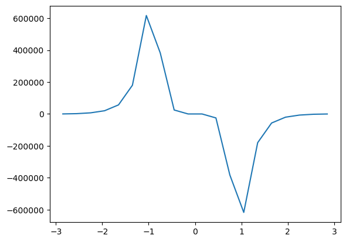

DIY tutorial
As we learned from the basic tutorial, in WannierBerri calculations are done by `Calculator <https://wannier-berri.org/docs/calculators.html#wannierberri.calculators.Calculator>`__s. In this tutorial we will se how to create our own calculators.
As an example let’s consider anomalous Nernst conductivity (Xiao et al. 2006 ). In the zero-temperature limit \(\alpha_{\alpha\beta}^{\rm ANE}\) may be obtained from AHC \(\sigma_{\alpha\beta}(\epsilon)^{\rm AHE}\) evaluated over a dense grid of Fermi levels \(\epsilon\)
where \(f(\varepsilon)=1/\left(1+e^\frac{\varepsilon-\mu}{k_{\rm B}T}\right)\) and the AHC is defined as a Fermi-sea integral of Berry curvature
\begin{equation} \sigma^{\rm AHC}_{xy} = -\frac{e^2}{\hbar} \sum_n \int\frac{d\mathbf{k}}{(2\pi)^3} \Omega^n_\gamma f(\epsilon_n) \label{eq:ahc}\tag{2} \end{equation}
In the zero-temperature limit it reduced to
Where we omit the dimensional factor for simplicity.
Thus, there are two ways of calculating ANE : * via eq (\ref{eq:ane-ahc}) * via eq (\ref{eq:ane})
let’s try eq (\ref{eq:ane-ahc}) first, because AHC is already implemented
Warning : this is an advanced tutorial. You something may not work from first try, you need to work with documentation to resolve the problem, but do not hesitate to ask the TA if you cannot.
[1]:
# Preliminary
# Set environment variables - not mandatory but recommended if you use Parallel()
#import os
#os.environ['OPENBLAS_NUM_THREADS'] = '1'
#os.environ['MKL_NUM_THREADS'] = '1'
import wannierberri as wberri
import wannierberri.models
print (f"Using WannierBerri version {wberri.__version__}")
import numpy as np
import scipy
import matplotlib.pyplot as plt
from termcolor import cprint
# This block is needed if you run this cell for a second time
# because one cannot initiate two parallel environments at a time
try:
parallel.shutdown()
except NameError:
pass
# Chiose one of the options:
parallel = wberri.Parallel(num_cpus=2)
#parallel = wberri.Parallel() # automatic detection
#parallel = wberri.Serial()
Using WannierBerri version 0.13.5
2023-08-12 02:20:26,671 INFO worker.py:1519 -- Started a local Ray instance. View the dashboard at 127.0.0.1:8268
[2]:
# Instead of Wannier functions, we work with a Hlldane model here https://wannier-berri.org/docs/models.html
model=wberri.models.Haldane_ptb()
system = wberri.System_PythTB(model)
R=0 found at position(s) [[3]]
NOT using ws_dist
Number of wannier functions: 2
Number of R points: 7
Recommended size of FFT grid [3 3 1]
Reading the system from PythTB finished successfully
anomalous Hall conductivity
Now, let’s evaluate the AHC on a grid of Ef-points, and then take a derivtive
[3]:
calculators = {}
Efermi = np.linspace(-3,3,21)
# Set a grid
grid = wberri.Grid(system, length=30 ) # length [ Ang] ~= 2*pi/dk
calculators ["ahc"] = wberri.calculators.static.AHC(Efermi=Efermi,tetra=False,kwargs_formula={"external_terms":False})
result_run_ahc = wberri.run(system,
grid=grid,
calculators = calculators,
parallel=parallel,
adpt_num_iter=0,
fout_name='Fe',
restart=False,
file_Klist="Klist_ahc.pickle", # needed to restart a calculation in future
print_Kpoints=False
)
determining grids from NK=None (<class 'NoneType'>), NKdiv=None (<class 'NoneType'>), NKFFT=None (<class 'NoneType'>)
length=30 was converted into NK=[35 35 30]
Minimal symmetric FFT grid : [3 3 1]
The grids were set to NKdiv=[7 7 1], NKFFT=[5 5 1], NKtot=[35 35 1]
Anomalous Hall conductivity (:math:`s^3 \cdot A^2 / (kg \cdot m^3) = S/m`)
| With Fermi sea integral Eq(11) in `Ref <https://www.nature.com/articles/s41524-021-00498-5>`_
| Output: :math:`O = -e^2/\hbar \int [dk] \Omega f`
| Instruction: :math:`j_\alpha = \sigma_{\alpha\beta} E_\beta = \epsilon_{\alpha\beta\delta} O_\delta E_\beta`
Grid is regular
The set of k points is a Grid() with NKdiv=[7 7 1], NKFFT=[5 5 1], NKtot=[35 35 1]
generating K_list
Done in 0.0007460117340087891 s
excluding symmetry-equivalent K-points from initial grid
Done in 0.002871274948120117 s
Done in 0.0028917789459228516 s
K_list contains 49 Irreducible points(100.0%) out of initial 7x7x1=49 grid
Done, sum of weights:1.0000000000000007
symgroup : <wannierberri.symmetry.Group object at 0x7f4c24f60fa0>
processing 49 K points : using 2 processes.
# K-points calculated Wall time (sec) Est. remaining (sec)
time for processing 49 K-points on 2 processes: 0.8433 ; per K-point 0.0172 ; proc-sec per K-point 0.0344
time1 = 0.0019228458404541016
Totally processed 49 K-points
[4]:
!ls
Fe-ahc_iter-0000.dat Klist_ahc.pickle
Fe-ahc_iter-0000.npz tutorial-wb-DIY.ipynb
[5]:
# taking derivative and plotting
ef = result_run_ahc.results["ahc"].Energies[0]
ahc_z = result_run_ahc.results["ahc"].data[:,2]
# take the derivative
d_ef=ef[1]-ef[0]
d_ahc_z = (ahc_z[1:]-ahc_z[:-1])/d_ef
efnew = (ef[1:]+ef[:-1])/2
plt.plot(efnew, d_ahc_z)
[5]:
[<matplotlib.lines.Line2D at 0x7f4c00604670>]

Look into documentation
Look into documentation to see how the AHC calculator is defined : look for “Calculator” on https://docs.wannier-berri.org and press the “source” link.
One can see that it is based on the StaticCalculator, and only redefines the __init__ method. Namely, it redefines formula that stands under the integral (Berry curvature) and fder=0 meaning that the formula is weighted by the 0th derivative of the Fermi distribution.
copy the definition of AHC calculator and redefine the and below and define the init class
(hint : leave the factor the same, for simplicity) (hint : formula shouldbe imported from wannierberri.formula.covariant.DerOmega )
[6]:
from wannierberri.calculators.static import StaticCalculator
from wannierberri.formula.covariant import Omega
from wannierberri import __factors as factors
class ANE(StaticCalculator):
........
File "/tmp/ipykernel_63552/1443802983.py", line 7
........
^
SyntaxError: invalid syntax
Evaluate ANE using the new calculator and plot the result
[1]:
# insert the needed code below
calculators = {}
Efermi = np.linspace(12,13,101)
# Set a grid
grid = wberri.Grid(system, length=50 ) # length [ Ang] ~= 2*pi/dk
calculators ["ane"] = ANE(Efermi=Efermi,tetra=True)
result_run_ane = wberri.run(system,
grid=grid,
calculators = calculators,
parallel=parallel,
adpt_num_iter=0,
fout_name='Fe',
restart=False,
# file_Klist="Klist_ahc.pickle" # needed to restart a calculation in future
)
---------------------------------------------------------------------------
NameError Traceback (most recent call last)
/tmp/ipykernel_72575/3794508531.py in <module>
2
3 calculators = {}
----> 4 Efermi = np.linspace(12,13,101)
5 # Set a grid
6 grid = wberri.Grid(system, length=50 ) # length [ Ang] ~= 2*pi/dk
NameError: name 'np' is not defined
[2]:
ef = result_run_ane.results["ane"].Energies[0]
ane_z = result_run_ane.results["ane"].dataSmooth[:,2]
plt.scatter(efnew,d_ahc_z)
plt.plot(ef, ane_z)
plt.show()
---------------------------------------------------------------------------
NameError Traceback (most recent call last)
/tmp/ipykernel_72575/1640526022.py in <module>
----> 1 ef = result_run_ane.results["ane"].Energies[0]
2 ane_z = result_run_ane.results["ane"].dataSmooth[:,2]
3
4
5 plt.scatter(efnew,d_ahc_z)
NameError: name 'result_run_ane' is not defined
Questions:
Make the k-points or Efermi denser. Will the agreement improve?
we calculated the AHC and ANE with zero refinement iterations, and the results matched well (or at least they should). If we calculate them separately, but with some refinement iterations, will the results match?
What if we use refinement itrations and run the two calculations together, in one
run()call ?
FormulaProduct
Look at the definition of erryDipole_FermiSurf
https://wannier-berri.org/_modules/wannierberri/calculators/static.html
It evaluates
\begin{equation} D_{ab} =\sum_n \int\frac{d\mathbf{k}}{(2\pi)^3} v_a\Omega^n_b f(\epsilon_n) \label{eq:ahc}\tag{2} \end{equation}
also look at definition of the Feormula https://wannier-berri.org/docs/formula.html
you can see that it is base on a FormulaProduct. Essentially, by analogy you may define any tensor, e.g.
i.e. product of several quantities weighted by rge second derivative of Fermi distribution. You may write any analogous formula, if you want. Try to define corresponding FormulaProduct and StaticCalculator classes, and try to evaluate them.
[ ]:
[ ]:
Problem :
try to prove (analytically and numerically) that
and tell me what is the factor missing?
** Have fun ! **
[ ]: